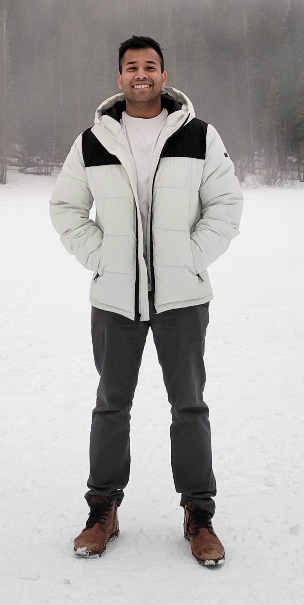
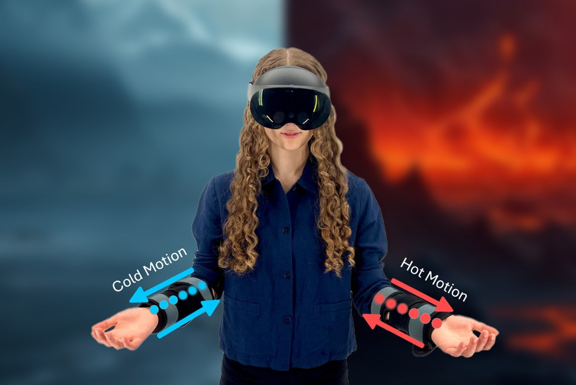
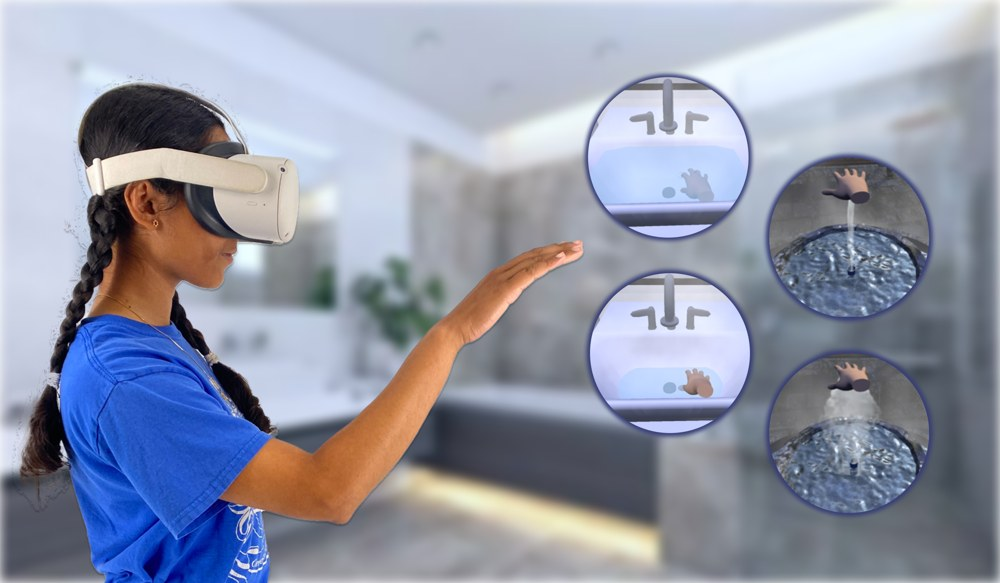
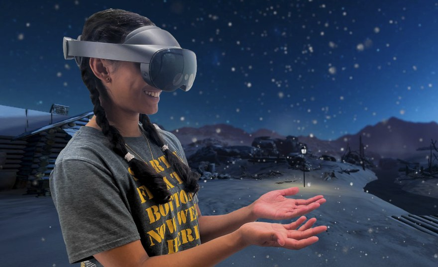

Thermal & tactile interfaces
Creating moving, localized thermal sensations through the interplay of temperature and touch.
HUMAN–COMPUTER INTERACTION · HAPTICS · XR
Instructor / UT Southwestern Medical Center
I study how thermal, tactile, and visual cues shape perception—and build interfaces that bring those sensations into extended reality.
Seeking Assistant Professor opportunities

RECENT RECOGNITION
01 / RESEARCH
I combine interface prototyping and controlled user studies to understand what we feel—and how to design for it.
Creating moving, localized thermal sensations through the interplay of temperature and touch.
Exploring thermal referral, masking, and wetness perception to enrich experiences in virtual environments.
My long-term vision: combining AI and human perception for clinical, educational, and therapeutic XR.

UIST 2024 / THERMAL HAPTICS
Creating the sensation of temperature moving across the skin by combining thermal referral with tactile motion.
Read the paper ↗
ISMAR 2024 / MULTISENSORY PERCEPTION
Investigating how temperature, pressure, and visual context influence the feeling of wetness on the palm.
Read the paper ↗
IMWUT 2024 / IMMERSIVE EXPERIENCES
Bringing snowflakes and raindrops to bare hands in VR through coordinated cold and tactile feedback.
Read the paper ↗02 / PUBLICATIONS
Journal articles and peer-reviewed conference papers. Demonstrations and posters are listed in my CV. * Equal contribution.
Ayush Bhardwaj, Ashish Pratap, Abbas Khawaja, Yatharth Singhal, Hyunjae Gil, and Jin Ryong Kim
No publications match this search. Try another term or select All.
03 / TEACHING & MENTORING
My teaching and mentoring experience spans HCI, virtual reality, graphics, and the foundations of computer science.
Teaching assistant experience
Guest lectures: Haptic Technologies in Virtual Reality (2024); Thermal Interfaces and Human Perception (2023).
LEARNING THROUGH RESEARCH
graduate and undergraduate students trained in XR, haptics, and research methods
high school students mentored through summer research experiences
At UT Dallas, I coordinated lab training (2021–2025) and led hands-on summer research in VR and haptics (2022–2024).
04 / BACKGROUND
I earned my Ph.D. in Computer Science at UT Dallas in 2025, advised by Dr. Jin Ryong Kim. My dissertation investigated thermal and wet feedback in XR through perceptual illusions.
Department of Radiation Oncology
UT Southwestern Medical Center
The University of Texas at Dallas
The University of Texas at Dallas
Jaypee Institute of Information Technology
Best Paper Honorable Mention, ACM UIST
HeatFlow
Best Demo Award, IEEE WHC
Outstanding Student Research Award, UT Dallas
Best Demonstration Award, IEEE ISMAR
Best Student Demonstration Award, SIGGRAPH Asia
Program committee, ACM TEI 2026 Work in Progress. Reviewing includes CHI, UIST, IMWUT, TVCG, IEEE VR, ISMAR, and haptics venues.
05 / LET’S CONNECT
I am seeking Assistant Professor opportunities in HCI, haptics, and XR, and welcome conversations about research collaborations and faculty roles.
yatharth.singhal@utsouthwestern.edu ↗